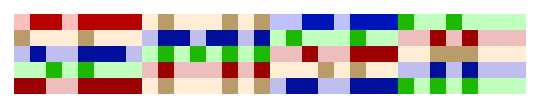

To Clarify Some Things
I was told by a fellow NES developer, kandowontu, who you may know for his work on Famidash and StarFox EX, that my article about VWFs in CelesteNES was not clear enough. So here is a post to clear things up.
I would have made some explanatory images myself, but alexmush has helpfully made some himself, and has allowed me to use them in this article. Thanks!
This is the image Kando sent, saying "This article summed up":
What wasn't clear about the last article?
I mainly focused on the raster trick itself, which allows me to render a 256x24 bitmap on the screen, in three strips of 256x8. I didn't focus enough on how the tilemap I showed draws text.
A quick summary
The bitmap is stored in groups of 8x1 pixels (8 wide, 1 tall). 32 bytes make up a full row. The total bitmap is 768 bytes in size. (Yes, I am using extra RAM, I wouldn't even dream of trying that on 2K of RAM!)
Each 8x1 cluster of pixels directly corresponds to a tile in the nametable. As such, with the tile map below, we can directly turn each bit from the bitmap into the actual bitmap shown on screen:

By quickly changing the scroll position on every scanline, we can show a different set of tiles each scanline, and show the bitmap in its original form, instead of an 8x1 stretched form.
A visual explanation.
These images have been made by alexmush, so thanks to him again!
Now, take this image of the word "SEMISEA":
We can split it into 8x1 clusters, which I'll refer to as simply bytes. They're stored line by line, then byte by byte.

Now, as I said earlier, these bytes correspond directly to tiles in the nametable, so here's the layout of tiles that we'll be using:
Our goal is to draw only the top of each tile. This is achievable by doing a cycle counted raster trick. (you know, the one I've been explaining here and in that last article)
But first, let's just draw it without any kind of raster trick:
Yes, as you can see, only the first row was drawn, stretched by 8 times.
The trick is to change the scroll position after drawing this row by cleverly programming the internal PPU registers (NESdev Wiki's reference on the subject) to move to the next tile early. Let's do that for row 1, to move to row 2's graphics early:
See, we're making progress. Let's do that again for the rest of the rows.
Row 3:
Row 4:
And now, the rest of the rows.
In our scheme, each scanline gets its own row of tiles, so effectively, these are the tiles, if we don't apply any raster tricks.
But we squish it down, to one eighth the size, using the raster trick described above. This erases most of the pixels, and only the pixels shown below are actually drawn.
When we compress these rows together, we get:

Ta-da! The word has been drawn!
Drawing stuff to the bitmap
Let's say you wanted to place a pixel at the coordinates (80, 14). Remember that our bitmap is 256x24 in size, with 24 rows of
32 8x1 clusters. First, we locate the cluster that we want to modify.
80 / 8 = 10, so the 10th byte is to be modified in row 14. To get the actual index, multiply the Y coordinate by the width, and add the X coordinate. So, we'll modify the byte at 14*32+10, or 458th byte.
But that only tells us the cluster we need to modify, which bit do I modify? Simply take the X coordinate, modulo 8 (or AND 7), and that's the bit position you modify.
If each tile in the tile map shown above were flipped (i.e. the counting pattern were to start on the right, rather than on the left, you'd have to modify bit 7-X instead.
We can draw more than one pixel this way, though we will have to handle the case where we have to write to multiple bytes in that case.
The variable width font looks like this, in memory:
(I have a script that mirrors all the bytes and calculates all characters' width, so I don't have to edit the flipped versions of the letters)
Each character is stored as an 8x8 image, made up of eight 8x1 clusters. (similar to the ones we've been dealing with!) This is quite convenient for us. This means that, when we want to draw a character, we just draw eight 8x1 clusters, shifted left to the correct position. (they end up being moved right instead, because we draw the LSB on the left)
Let's try to draw an 8x1 strip (11101001 - #..#.###), to the screen, at the coordinates (60, 10).
First, we get the coordinates of the initial pixel: the index within the row is 7, and the index within the bitmap is 10*24+7,
or 247. Reading from these we can see that there is some data already written: 00000000 00000101 (these would be drawn in
reverse, so #.#..... .........
Now, prepare the strip for drawing by shifting it by X % 8 (in this case, 60 % 8 is 4): 00001110 10010000.
My game actually clears the bits below, but I don't think I actually need to do that, so just pretend I'm not.
Finally, OR the shifted strip with the bytes in question, to get: 00001110 10010101, or #.#.M..M .MMM..... (for clarity, M means
one, but newly placed)
Conclusion
I believe I've pretty much explained everything there is to explain, from how the 256x24 bitmap is drawn, to how pixels are placed on said bitmap. To see why I decided to do variable width fonts like this, why I decided to do proportional fonts in the first place, or where I got the idea from, see the previous article on the topic.